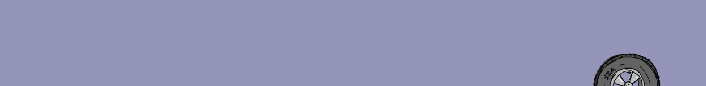
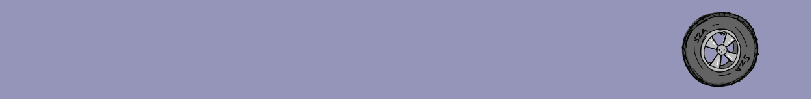
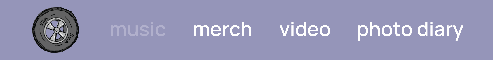
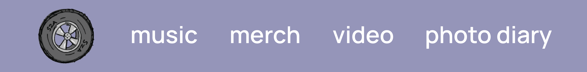
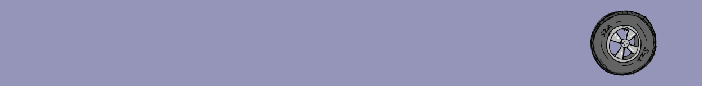
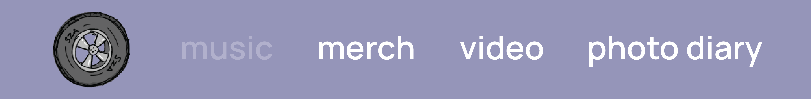
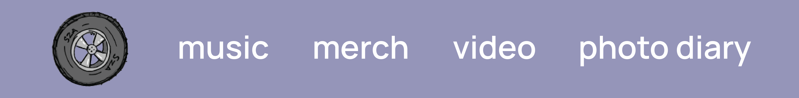

menu microinteraction: szactrl.com
triggers :
- click on tire image
rules :
- on click, tire image moves up 95px on y-axis
- tire moves left 336px, rotates -90° + "photo diary" fades-in: 0% opacity to 100% opacity 0.8 seconds
- tire moves left 197px, rotates -90° + "video" text fades-in: 0% opacity to 100% opacity 0.8 seconds
- tire moves left 218px, rotates -90° + "merch" text fades-in: 0% opacity to 100% opacity 0.8 seconds
- tire moves left 215px, rotates -90° + "music" text fades-in: 0% opacity to 100% opacity 0.8 seconds
- tire moves a total of 967px to the left and -360° total
feedback :
- on click, tire image rises vertically.
- as the tire completes a full rotation, it moves to the left to reveal the menu items fading-in one by one: "photo diary" → "video" → "merch" → "music"
- Because the menu items are being revealed from right to left, the actual order of the menu items will be "music", "merch", "video", "photo diary".
loops + modes :
- n/a






